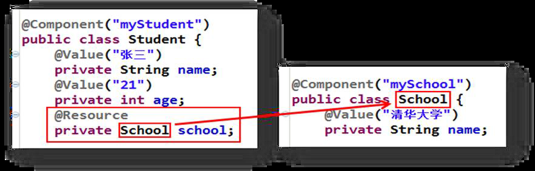
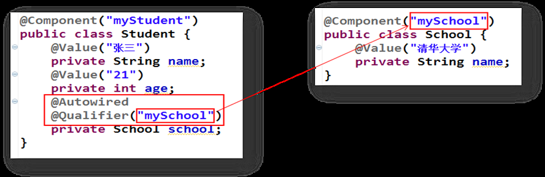

java_spring04Autowired与Resource差异解析¶
spring中比较容易混淆的是Resource和Autowired，特此做下区分。
Resource：j2ee的注解，默认以byName的方式去匹配与属性名相同的bean的id，如果没有找到就会以byType的方式查找，如果byType查找到多个的话，使用@Qualifier注解（spring注解）指定某个具体名称的bean。

Autowired：spring注解，默认是以byType的方式去匹配类型相同的bean，如果只匹配到一个，那么就直接注入该bean，无论要注入的 bean 的 name 是什么；如果匹配到多个，就会调用 DefaultListableBeanFactory 的 determineAutowireCandidate 方法来决定具体注入哪个bean。
determineAutowireCandidate 方法的逻辑是：
先找 Bean 上有@Primary 注解的，有则直接返回 bean 的 name。
再找 Bean 上有 @Order，@PriorityOrder 注解的，有则返回 bean 的 name。
最后再以名称匹配（ByName）的方式去查找相匹配的 bean。
可以简单的理解为先以 ByType 的方式去匹配，如果匹配到了多个再以 ByName 的方式去匹配，找到了对应的 bean 就去注入，没找到就抛出异常。
还有一点要注意：如果使用了 @Qualifier 注解，那么当自动装配匹配到多个 bean 的时候就不会进入 determineAutowireCandidate 方法（亲测），而是直接查找与 @Qualifer 指定的 bean name 相同的 bean 去注入，找到了就直接注入，没有找到则抛出异常。

@Autowired与@Resource异同：
1、@Autowired与@Resource都可以用来装配bean。都可以写在字段上，或写在setter方法上。
2、@Autowired默认按类型装配（属于spring规范），默认情况下必须要求依赖对象必须存在，如果要允许null 值，可以设置它的required属性为false，如：@Autowired(required=false) ，如果我们想使用名称装配可以结合@Qualifier注解进行使用
3、@Resource（属于J2EE复返），默认按照名称进行装配，名称可以通过name属性进行指定。如果没有指定name属性，当注解写在字段上时，默认取字段名进行按照名称查找，如果注解写在setter方法上默认取属性名进行装配。当找不到与名称匹配的bean时才按照类型进行装配。但是需要注意的是，如果name属性一旦指定，就只会按照名称进行装配。
它们的作用相同都是用注解方式注入对象，但执行顺序不同。@Autowired先byType，@Resource先byName。
问题：Spring的@Autowired加到接口上但获取的是实现类？
/* 类 @Controller注解，会在spring容器中实例化对象 */
@Controller
public class UserContoller{
@Autowired // 先按类型找，然后按id为属性名去找
private UserService userService;
//为什么他会拿到userServiceImpl？
// @Autowired会帮你按UserService的类型去容器中找唯一bean对象
// 1、容器没有该类型的对象：报错
// 2、容器中有该类型的唯一bean对象，就将该唯一bean对象赋值给该属性
///3、容器中有多个【两个及以上】该类型的唯一bean对象，
// 它会再根据该属性名去容器中找，
// 看看容器中的哪个bean对象的id值和该属性名一致，
// 如果有，就将容器中该对象赋值给该属性，如果没有报错。
}
/* 接口 */
public interface UserService{}
/* 类 @Service注解，会在spring容器中实例化对象 */
@Service
public class UserServiceImpl implements UserService{}
@Autowired先按类型找，然后再按id为属性名去找
他会帮你按UserService的类型去容器中找唯一bean对象
容器没有该类型的对象：报错
容器中有该类型的唯一bean对象，就将该唯一bean对象赋值给该属性
容器中有多个【两个及以上】该类型的唯一bean对象，
它会再根据该属性名去容器中找，
看看容器中的哪个bean对象的id值和该属性名一致，
如果有，就将容器中该对象赋值给该属性，如果没有报错。
然后通过多态的向上转型就赋值成功。等价于之前手动赋值
UserService userService = new UserServiceImpl();
问题：同一类型拥有多个实现类的时候，如何注入呢？
答：这种场景下，只能通过 byName 注入的方式。可以使用 @Resource 或 @Qualifier 注解。
问题：如果没有指定Spring创建的bean的名称，会怎么注入呢？
(1)默认名为类名,但首字母小写,如:UserService类,创建的bean的name为userService
(2)如果类名前两个或以上字母都为大写,那么bean的名字就是类名,如:TUserService类,默认创建的bean的name为TUserService
@Required 注释应用于 bean 属性的 setter 方法，它表明受影响的 bean 属性在配置时必须放在 XML 配置文件中，否则容器就会抛出一个 BeanInitializationException 异常
参考
Spring依赖注入与自动装配:https://blog.csdn.net/weixin_44273302/article/details/113716352
Spring的@Autowired和@Qualifier注解的3个知识点：https://blog.csdn.net/gs838251686/article/details/82973228
spring学习笔记之注解注入方式详解（自动装配）详解:https://blog.csdn.net/iamlinuxasd/article/details/95735226